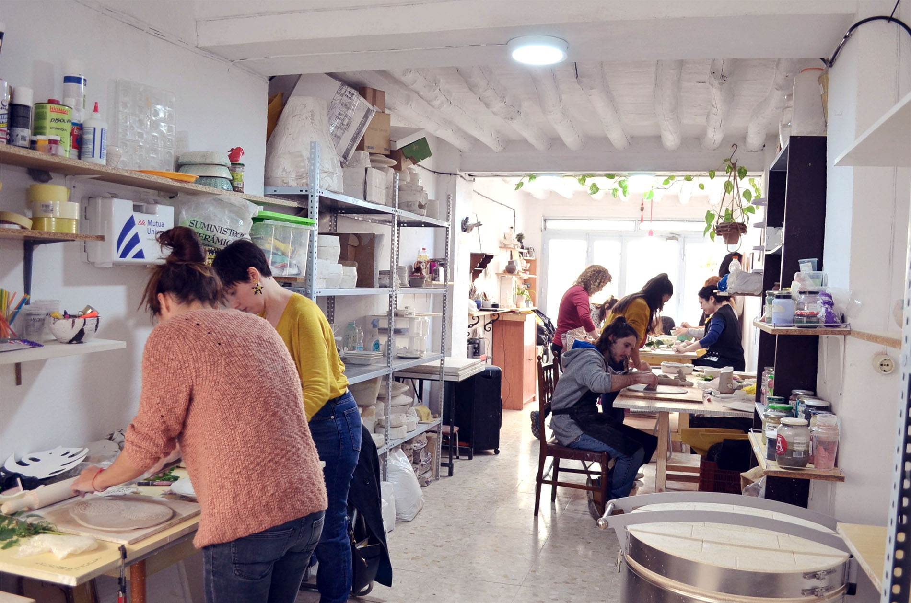
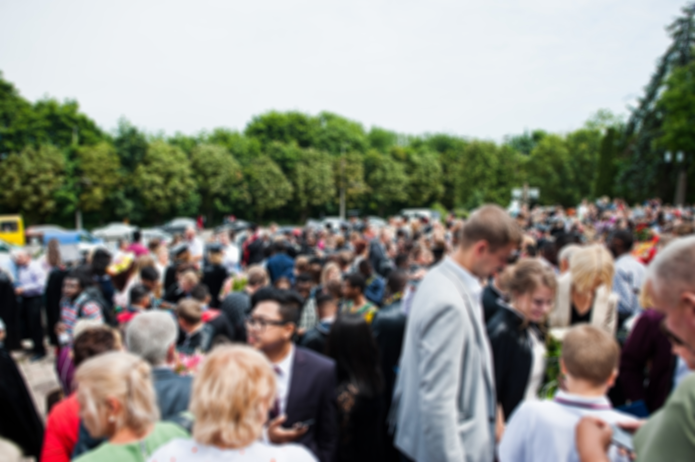

Les Jornades d'Artesania Barcelona neixen com a resposta a la necessitat de crear un punt de trobada entre els artesans, els professionals del sector cultural i el públic en general. En una societat dominada per la producció en massa, recuperar i celebrar el valor del fet a mà és un acte de resistència cultural.
Organitzades per l'Ajuntament de Barcelona en col·laboració amb la Xarxa d'Artesans de Catalunya, les jornades representen tres dies intensos d'aprenentatge, inspiració i comunitat.
Per què l'artesania avui?
En un context de crisi climàtica i questionament dels models de consum actuals, l'artesania proposa una alternativa concreta: objectes durants, fets amb materials locals, que mantenen una relació íntima entre qui els crea i qui els usa. No és nostalgia, és un model de futur.
L'artesà coneix els materials, respecta els seus límits, i hi dialoga. Cada peça porta la marca del temps i de les mans que l'han creat. Aquesta singularitat és el que el mercat de masses mai podrà oferir.
L'artesà no fabrica objectes: construeix relacions entre la matèria, l'eina i l'ésser humà. — Richard Sennett, El artesano
Tres eixos temàtics
Les jornades s'estructuren al voltant de tres grans eixos que permeten abordar l'artesania des d'angles complementaris:
-
Item One: Tradició i patrimoni
Com recuperem i documentem les tècniques que ens han llegat les generacions anteriors? Ponents i investigadors comparteixin les seves metodologies de recerca i preservació dels oficis tradicionals catalans.
-
Item Two: Innovació i materials
L'artesania no està renyida amb la tecnologia. En aquesta secció explorem com les noves eines, els materials sostenibles i els mètodes digitals poden enriquir la pràctica artesanal sense trair la seva essència.
-
Item Three: Mercat i viabilitat
Ser artesà avui és una opció professional viable? Experts en economia creativa i artesans de èxit compartiran estratègies per convertir la passió en un projecte econòmicament sostenible.
Un format participatiu
Les jornades no només ofereixen contingut teòric. El format inclou tallers pràctics on els participants poden aprendre tècniques bàsiques directament de la mà dels mestres. Des de torn de ceràmica fins a fonaments d'enquadernació, passant per dyeing natural amb plantes.

La filosofia dels tallers és la de «les mans al fang»: no n'hi ha prou amb observar, cal experimentar. Els participants surten de cada sessió amb una obra pròpia i amb el coneixement per continuar practicant.
L'exposició col·lectiva
Un dels moments culminants de les jornades és l'exposició final, on artesans professionals i participants dels tallers exhibeixen conjuntament les seves obres. Una demostració que l'artesania no entén de nivells sinó de compromís.
Qui pot participar?
Les jornades estan obertes a tothom: des d'artesans professionals que volen actualitzar coneixements i fer xarxa, fins a persones sense cap experiència prèvia que senten curiositat per descobrir un ofici nou. Les sessions es dissenyen perquè siguin accessibles i enriquidores per a tots els nivells.

L'única condició és la voluntat d'aprendre i de respectar els materials, els mestres i la resta de participants. L'artesania és, per damunt de tot, una cultura de la paciència i de l'atenció al detall.
- Artesans i artesanes en actiu
- Estudiants de disseny, belles arts i oficis
- Professionals del sector cultural i turístic
- Persones que volen aprendre un nou ofici
- Famílies amb ganes de fer activitats creatives
L'entrada és gratuïta. Alguns tallers específics requereixen inscripció prèvia per limitar el nombre de participants i garantir la qualitat de l'aprenentatge. Podeu trobar tota la informació de les inscripcions a la pàgina del Programa.